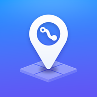

EJ Beta is now the main Eckstein Jobs app
Everything from the beta (Setup stage, job items, the route editor and prices) is in the main app now.
On iPhone: open the Eckstein Jobs icon on your Home Screen (not the button below). Each Home Screen app keeps its own settings, so paste your keys there once: Settings → Stages (edit key) and Settings → Pricing (pricing key). Then you can delete the EJ Beta icon.
Open Eckstein JobsOn a computer the button opens the main app with your beta keys and saved routes already in it.